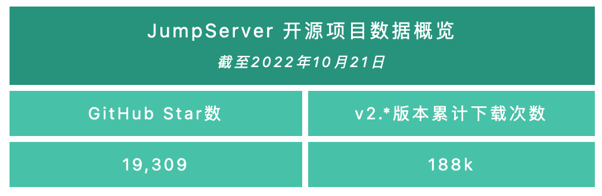
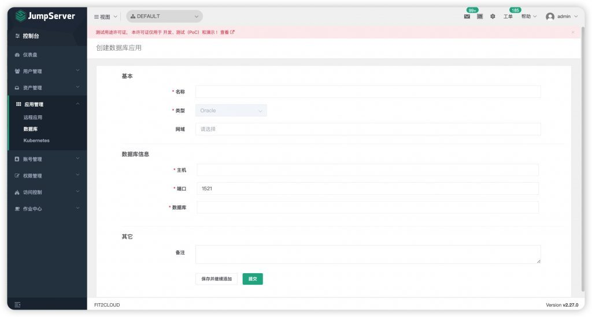
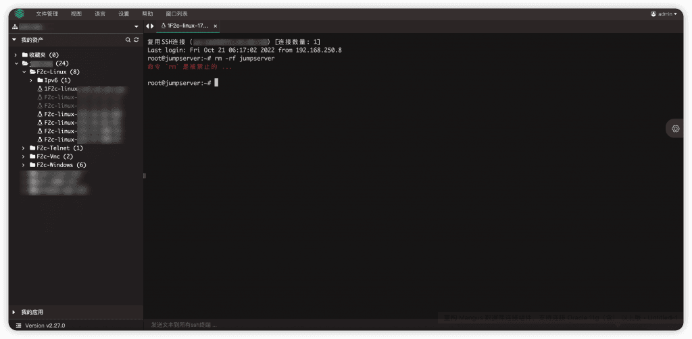

2022年10月24日，JumpServer开源堡垒机正式发布v2.27.0版本。在这一版本中，我们重构了Magnus数据库连接组件，支持代理连接Oracle 11g（含）以上版本的数据库。在之前的版本中，Magnus组件只支持代理连接Oracle 11g、Oracle 12c版本，限制了一些用户因使用Oracle 12c（不含）以上版本的数据库导致无法连接的问题。在新版本中，通过Magnus组件连接Oracle数据库将不会受到版本限制。
另外，在这一版本中，JumpServer命令过滤器支持关联节点，该节点及子节点的资产都会受到此命令过滤器规则的限制。
新增功能
1. 重构Magnus数据库连接组件，支持代理连接Oracle 11g（含）以上版本的数据库
在JumpServer v2.27.0版本中，我们重构了Magnus数据库连接组件，支持代理连接Oracle 11g（含）以上版本的数据库。在之前的版本中，Magnus组件只支持代理连接Oracle 11g、Oracle 12c数据库，当有些用户使用Oracle 12c（不含）以上的数据库时，就会遇到无法连接的情况。在新版本中，用户通过Magnus组件连接Oracle数据库将不会受到版本限制。
相关注意事项如下：
■ Magnus默认开启的数据库端口是100个，如数据库超过100个时，需修改配置文件：vim
/opt/jumpserver/config/config.txt，修改启用端口数据量：MAGNUS_PORTS=30000-30200；
■ 重构后的Magnus组件代理连接Oracle数据库时，我们只支持客户端OCI（Oracle Call Interface，Oracle调用接口）连接方式，暂不支持Thin连接方式；
■ 在Windows环境下，一些客户端工具会出现OCI版本过低的问题，并因此导致Oracle连接失败。需要用户手动下载19c（含）以上版本的OCI，进行替换。

▲ 图1 创建Oracle数据库时无需再指定版本

▲图2 获取Oracle连接信息
▲ 图3 Magnus代理连接多版本Oracle数据库（命令行连接方式）
▲ 图4 Magnus代理连接多版本Oracle数据库 （使用Navicat客户端工具连接方式）
2. 命令过滤器支持关联节点
在JumpServer v2.27.0版本中，命令过滤器支持关联节点，该节点及子节点的资产都受此命令过滤器规则的限制。在实际使用过程中，用户会不断添加资产到指定的节点，单独授权节点会导致每次新添加资产时都需要额外进行授权规则修改或者命令过滤器修改，如果忘记了容易出现安全事故。
在该新版本中，JumpServer新增支持关联节点。将资产添加到节点中，将会自动继承节点的命令过滤规则，极大地方便了用户安全运维，能够有效避免一些因高危命令导致的安全事故。
管理员选择“资产管理”→“命令过滤”，在创建命令过滤器的表单上可关联节点。授权节点后，连接该节点的资产或者子节点的资产，输入命令规则的命令，即会受到该命令过滤器规则的限制。
▲ 图5 管理员创建命令过滤器时，可关联节点
▲图6 测试命令过滤器中关联节点的资产，输入命令规则的命令，受该命令过滤器的限制
功能优化
■ 优化创建⽤户时，默认勾选登录后需要修改密码；
■ 优化后端⾃动⽣成密码时，⾸位不使⽤特殊字符；
■ 优化终端端点的数据库端口配置⽅式；
■ 优化通过Web CLI⽅式连接资产时，⽀持⼀键恢复到默认主题；
■ 优化页⾯点击按钮时，顶部只显⽰⼀条弹出消息的问题；
■ 优化Lion组件连接Windows资产进⾏操作时出现的卡键情况；
■ 优化后端服务创建⽬录时指定权限为755；
■ 优化各组件命令上传逻辑，当Elasticsearch服务停⽌时，⾃动将命令上传至本地数据库存储；
■ 优化重构Magnus后端数据库会话处理逻辑（Magnus组件）；
■ 优化创建Oracle数据库应⽤时，不需要填写数据库版本（X-Pack增强包内）；
■ 优化Razor组件的内存使⽤机制，减少多会话并发时发⽣OOM（Out Of Memory，内存溢出）异常的问题（Razor组件，X-Pack增强包内）；
■ 优化云同步的同步实例列表不显⽰多选框的问题（X-Pack增强包内）。
Bug修复
■ 修复Celery任务丢失⼼跳不会重连的问题；
■ 修复Celery定时任务会⾃动停⽌不执⾏的问题；
■ 修复任务列表⽆法查看Ansible任务执⾏⽇志信息的问题；
■ 修复国密加密中，密码末尾是空格导致解密失败的问题；
■ 修复Elasticsearch命令存储失效时，查看会话列表、命令记录列表等失败的问题；
■ 修复OAuth2认证的⽤户被管理员本地被禁⽤后，页⾯会⼀直跳转的问题；
■ 修复⽤户个⼈页⾯信息更新不及时的问题，例如⽤户⾓⾊的显⽰；
■ 修复刷新页⾯时，出现空⽩页⾯闪现的问题；
■ 修复本地客户端连接Windows 2008资产时，录像引起服务异常退出的问题；
■ 修复资产详情查看授权⽤户页⾯报错的问题；
■ 修复全局组织下的⼀些资源不能创建、更新的问题（X-Pack增强包内）。